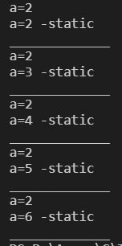

什么是C语言？
C语言是一门计算机语言
计算机语言是什么？人和计算机交流的语言 C/C++/java/python
语言的发展：低级语言→高级语言
- 010001000-机器语言【二进制语言 硬件-电-正电/负电】
- 汇编语言
- B语言
- C语言、C++—高级语言
C语言→早期不是很成熟→成熟→流行 国际标准ANSIC-C89/C90 、 C99/C11并不流行
#include <stdio.h>
int main() //main函数是程序的入口,一个工程中main函数有且仅有一个
{
printf("hello\n");
printf("he he\n");
return 0;
}
数据类型
- char - 字符数据类型 1
- short - 短整型 2
- int - 整形 4
- long - 长整型 4
- long long -更长的整形 8
- float -单精度浮点数 4
- double -双精度浮点数 8
char ch = 'As';
int a = 0;
float b = 1.22f;
double c = 1.23;
printf("char: %c\n", ch);
printf("int: %d\n", a); //整形
printf("float: %f\n", b);
printf("double: %lf\n", c);
printf("%d\n", sizeof(char)); //1个字节
printf("%d\n", sizeof(short)); //2
printf("%d\n", sizeof(int)); //4
printf("%d\n", sizeof(long)); //4\8
printf("%d\n", sizeof(long long)); //8
printf("%d\n", sizeof(float)); //4
printf("%d\n", sizeof(double)); //8
变量、常量
变量
分类
- 局部变量
- 全局变量
【当局部变量和全局变量同名时，局部变量优先使用】
如何使用
scanf \ printf
#include <stdio.h>
int main()
{
int num1, num2; //C语言语法规定，变量要定义在当前代码块的最前面
scanf("%d,%d", &num1, &num2); //取地址符号&
printf("sum= %d\n", num1 + num2);
return 0;
}
作用域：（限定的这个名字的可用性的代码范围）
作用域（scope），程序设计概念，通常来说，一段程序代码中所用到的名字并不总是有效/可用的, 而限定这个名字的可用性的代码范围就是这个名字的作用域。
- 局部变量的作用域是变量所在局部范围。
- 全局变量的作用域是整个工程。
生命周期：变量的生命周期指的是变量的创建到变量的销毁之间的一个时间段
- 局部变量的生命周期是：进入作用域生命周期开始，出作用域生命周期结束。
- 全局变量的生命周期是：整个程序的生命周期。
常量
字面变量
const 修饰的常变量：是变量，但又有常属性，所以是常变量
#define 定义的标识符常量
枚举常量
#include <stdio.h>
enum Sex //枚举常量
{
MALE,
FEMALE,
SECERT
};
int main()
{
enum Sex s = FEMALE;
printf("%d\n", MALE); //0
printf("%d\n", FEMALE); //1
printf("%d\n", SECERT); //2
return 0;
}
字符串、转义字符、注释
字符串(%s\n)
#include <stdio.h>
#include <string.h>
int main()
{
char arr1[] = "abc";
char arr2[] = {'a', 'b', 'c'};
char arr3[] = {'a', 'b', 'c', 0};
printf("%s\n", arr1); // abc
printf("%s\n", arr2); // abcabc
printf("%s\n", arr3); // abc
printf("%d\n", strlen(arr1)); // 3
printf("%d\n", strlen(arr2)); // 6 未知
printf("%d\n", strlen(arr3)); // 3
printf("%d\n", strlen("c:\test\32\test.c")); // 13
printf("%s\n", "\32"); //
// \t是一个字符
// \32也是一个转移字符，是32作为八进制代表的十进制数字，作为ASCII码值,对应的字符
// 32--->10进制26【3*8^1+2*8^0】-->作为ASCII码代表的字符
printf("%s\n", "\130"); //X
printf("%s\n", "\x30"); //0
}
这种由双引号（Double Quote）引起来的一串字符称为字符串字面值（String Literal）,或者建成字符串
注：字符串的结束标志是一个\0的转义字符。在计算字符串长度的时候\0是结束标志，不算做字符串内容。
转义字符【\】
注意：
- 区分，斜杠：”/” 与 反斜杠：”\” ,此处不可互换
- \xhh 十六进制转义不限制字符个数 ‘\x000000000000F’ == ‘\xF’

注释
作用
- 代码中有不需要的代码可以直接删除，也可以注释
- 代码中有些代码比较难懂，可以加一下注释文字
形式
- C语言风格的注释/*xxxxxxx*/： 缺陷：不能嵌套注释
- C++注释风格//xxxxx：可以注释一行也可以注释多行
选择语句
循环语句
函数：特点是简化代码，代码复用
数组
定义：一组相同类型元素的集合
使用
操作符
- 算数操作符：
+ - * / %
- 移位操作符：
>> << --- 移动二进制位
- 位操作符：
& ^ |
- 赋值操作符：
= += -= /= &= ^= |= >>= <<=
- 单目操作符：
! 逻辑反操作
- 负值
+ 正值
& 取地址
sizeof 操作数的类型长度（以字节为单位）
~ 对一个数的二进制按位取反
-- 前置、后置--
++ 前置、后置++
* 间接访问操作符(解引用操作符)
(类型) 强制类型转换
#include <stdio.h>
#include <string.h>
int main()
{
int a = 10;
int arr[] = {1, 2, 3, 4, 5, 6};
printf("%d\n", sizeof(a)); //4
printf("%d\n", sizeof(int)); //4
printf("%d\n", sizeof a); //4
//printf("%d\n", sizeof int; //err
printf("%d\n", sizeof(arr)); //24
printf("%d\n", sizeof(arr) / sizeof(arr[0])); //6
return 0;
}
注：原码、反码、补码
- 只要是整数，内存中存储的都是二进制补码
- 对于正数来说，反码、补码、原码 相同。
- 对负数来说，存储的是补码。
- 负数： ①原码是直接按照正负写出来的二进制序列； ②反码是原码的符号位不变，其他的位按位取反得到的； ③补码是反码+1。
-2
原码：1000000000000000000000010
反码：1111111111111111111111101
补码：1111111111111111111111110
#include <stdio.h>
int main()
{
int a = 0;
int b = ~a; //~按二进制取反
//00000000000000000000000000000000
//11111111111111111111111111111111
//原码、反码、补码
//11111111111111111111111111111111
//11111111111111111111111111111110
//10000000000000000000000000000001
printf("%d\n", b); //-1，适用的，打印的是这个数的原码
//有符号数，最高位的二进制位符号位
return 0;
}
#include <stdio.h>
int main()
{
int a = 10, b = 10;
int c = a++; //后置++，先使用，在++
int d = ++b; //前置++，先++，在使用
printf("%d\n%d\n%d\n%d\n", a, c, b, d); //11 10 11 11
a = 10, b = 10;
int e = a--; //后置--，先使用，在--
int f = --b; //前置--，先--，在使用
printf("%d\n%d\n%d\n%d\n", a, e, b, f); //9 10 9 9
return 0;
}
int a = (int)3.14;//double-->int
- 关系操作符：
>
>=
<
<=
!= 用于测试“不相等”
== 用于测试“相等
- 逻辑操作符：&& 逻辑与【零为假,非零为真】 ； || 逻辑或【同假为假】
#include <stdio.h>
int main()
{
int a = 3;
int b = 5;
int c = a & b;//按位与
int d = a ^ b;
printf("%d\n", c); //1
printf("%d\n", d); //6 [^不是次方，是异或]
//异或的计算规律：对应二进制同，则为0；对应二进制异，则为1
//按位与：只有对应的两个二进位都为1时，结果位才为1
//3: 011
//5: 101
//6: 110 - 异或
//1: 001 - 按位与
return 0;
}
- 条件操作符(三木操作符)：exp1?exp2:exp3
- 逗号表达式：exp1,exp2,exp3……expn
- 下标引用、函数调用和结构成员：[] () . ->
关键字
常见关键字
auto break case char case count continue default do double else enum extern float for goyo if int long register return short signed sizeof static struct switch typeof union unsigned void volatile while
auto int a = 10; //局部变量，自动创建，自动销毁，自动变量，默认省略auto
//int 定义的变量是有符号的
//signed int;有符号的
unsigned int num=0;//无符号的
register int b=0;//寄存器关键字
//struct 结构体关键字
//union 联合体，共用体
typedef:类型定义
unsigned int num = 20;
typedef unsigned int u_int; //类型重定义
u_int num2 = 20; //num1和num2类型一致
static修饰变量和函数
修饰局部变量-静态局部变量（局部变量的生命周期变长）
#include <stdio.h> #include <string.h> void text() { int a = 1; a++; printf("a=%d\n", a); // 2 2 2 2 2 } void text2() { static int a = 1; //修饰局部变量,局部变量的生命周期变长 a++; printf("a=%d -static\n", a); // 2 3 4 5 6 } int main() { int i = 0; while (i < 5) { text(); text2(); printf("_____________\n"); i++; } return 0; }
修饰全局变量-静态全局变量（改变了作用域，让静态的全局变量只能在自己的源文件内使用，出了源文件就无法再使用）
运行正常
//add.c int g_val = 2021; //全局变量 //test.c #include <stdio.h> int main() { //extern -声明外部符号 extern int g_val; printf("g_val=%d\n", g_val); return 0; }运行异常
//add.c static int g_val = 2021; //test.c #include <stdio.h> int main() { //extern -生命外部符号 extern int g_val; printf("g_val=%d\n", g_val); return 0; }修饰函数-静态函数（修饰函数的外部链接属性，外部链接属性–>内部链接属性） 一个函数被static修饰，使用这个函数只能在本源文件内使用，不能再其他源文件内使用。
//add.c int Add(int x, int y) { int z = x + y; return z; } //test.c #include <stdio.h> int main() { extern Add(int, int); printf("%d", Add(1, 2)); return 0; }
#define定义常量和宏
定义标识符常量：#define MAX 1000
定义宏
#include <stdio.h>
//define定义标识符常量
#define MAX 1000
//define定义宏
#define MAX(x, y) (x > y ? x : y)
//函数
int Max(int x,int y){
if(x>y){
return x;
}else{
return y;
}
}
int main()
{
//函数的方式
int max = Max(2, 3);
printf("MAX = %d\n", max);
//宏的方式
max = MAX(2, 3);
printf("MAX = %d\n", max);
return 0;
}
指针
内存
内存是电脑上特别重要的存储器，计算机中所有程序的运行都是在内存中进行的 。 所以为了有效的使用内存，就把内存划分成一个个小的内存单元，每个内存单元的大小是1个字节。 为了能够有效的访问到内存的每个单元，就给内存单元进行了编号，这些编号被称为该内存单元的地址。

指针变量
- 变量地址取出
- 地址存储
- 使用实例–推广使用
- 指针变量的大小
#include <stdio.h>
int main()
{
int a = 10; //4个字节
int *p = &a; //取地址
//有一种变量是用来存放地址的-指针变量
printf("%p\n", &a); //打印地址
printf("%p\n", p); //打印地址
printf("a=%d\n", a);
*p = 20; //* -解引用操作符,间接访问操作符
printf("a=%d\n", a);
char ch = 'a';
char *pc = &ch;//类型是char *
printf("ch=%c\n", ch);
*pc = 'w';//与上面的*意义不同
printf("ch=%c\n", ch);
//指针大小
printf("%d\n", sizeof(char *)); //x64下为8个字节，win32为4个字节
printf("%d\n", sizeof(short *)); //x64下为8个字节，win32为4个字节
printf("%d\n", sizeof(int *)); //x64下为8个字节，win32为4个字节
printf("%d\n", sizeof(double *)); //x64下为8个字节，win32为4个字节
return 0;
}
结构体 描述复杂类型
#include <stdio.h>
#include <string.h>
struct Stu
{
char name[20]; //名字
int age; //年龄
char sex[5]; //性别
char id[15]; //学号
};
int main()
{
//打印结构体信息
struct Stu s = {"张三", 20, "男", "20180101"};
//.为结构成员访问操作符
printf("name = %s age = %d sex = %s id = %s\n", s.name, s.age, s.sex, s.id);
s.age = 18;
// s.name = "李四";//err
strcpy(s.name, "李四"); //string-copy strcpy 字符串拷贝
printf("name = %s age = %d sex = %s id = %s\n", s.name, s.age, s.sex, s.id);
//->操作符
struct Stu *ps = &s;
//. 结构体变量.成员
//-> 结构体指针->成员
printf("name = %s age = %d sex = %s id = %s\n", (*ps).name, (*ps).age, (*ps).sex, (*ps).id);
printf("name = %s age = %d sex = %s id = %s\n", ps->name, ps->age, ps->sex, ps->id);
return 0;
}